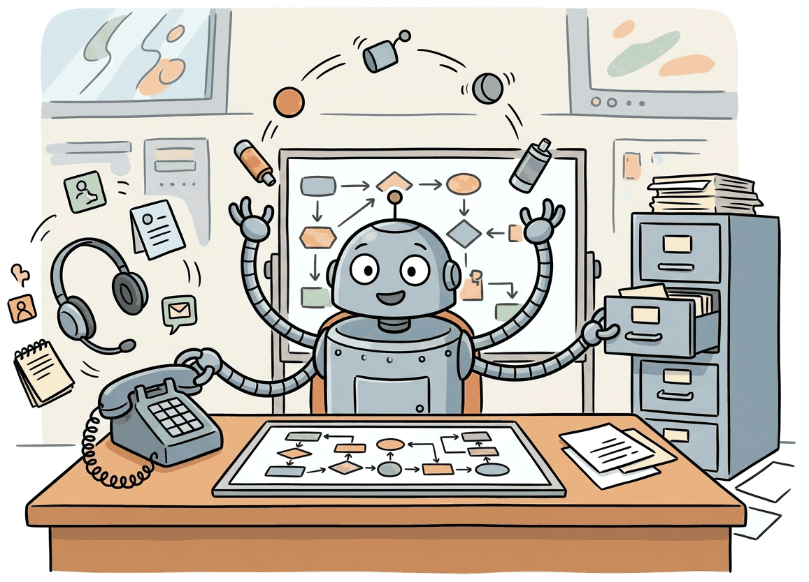

"A test set that does not talk back is not a test set for a conversational agent. It is a test set for an essay-writing model that happens to be reading transcripts."
Eval, Vibe-Averse AI Agent
Static evaluation breaks the moment your agent has to hold a conversation. A user who changes their mind mid-flow, clarifies a vague request, or pushes back on a recommendation is not a single-turn benchmark, they are a feedback loop. The frontier of agent evaluation in 2024-2026 is simulation: pit your agent against a scripted or LLM-driven user simulator inside an instrumented environment, give both sides goals and tools, and score the final world state rather than the surface text. This section walks through the three benchmarks that have anchored this shift, τ-bench (Sierra Research, 2024), τ2-bench (2025), and MM-τ-p2 (multi-modal, persona-adaptive, 2026), explains how to write a user simulator that does not collapse into a yes-man, and shows where simulation is the right tool versus where simpler trajectory evaluation still wins. The metrics we use here (pass@k, goal-state comparison) build directly on the foundations from Section 42.1.
Prerequisites
This section assumes familiarity with tool-using agents from Part VI, LLM-as-Judge from Section 44.1, and the prompt engineering patterns from Section 14.1. Familiarity with multi-turn conversation handling and structured tool calls (Section 25.4) is helpful.
43.3.1 Why Static Evaluation Fails for Conversational Agents
Sierra's tau-bench shipped with a single configuration error in 2024 that caused half the public leaderboard to be silently invalid for three weeks. The fix changed every model's score by about 8%, and nobody changed places on the leaderboard, a reminder that benchmark rankings are often more robust than the benchmarks themselves.

Most published LLM benchmarks share a hidden assumption: the input is a fixed prompt and the output is a single response graded against a reference. This is the world of MMLU, GSM8K, HumanEval, and (with mild stretching) MT-Bench. It is the wrong world for the agents that show up in production support queues, in airline rebooking flows, in expense-policy assistants, and in coding copilots that span dozens of turns.
Consider a customer service agent that helps a user return an item. A static benchmark hands the agent the complete user intent in one shot: "I bought a blue T-shirt, size M, order 12345, on April 3. I want to return it for a refund because it does not fit." The agent calls process_return("12345", "refund") and the test passes. Reality looks nothing like that. The user starts with "hey, the shirt doesn't fit", does not remember the order number, hesitates when offered a store credit, asks if they can exchange instead, changes their mind, and finally settles on a refund only after the agent surfaces the relevant policy. Every one of those turns is a branch the agent could mishandle, and none of them appear in a one-shot benchmark.
Static evaluation of conversational agents fails for three structural reasons. (1) User adaptation: real users update their preferences in response to agent suggestions, so the optimal next action depends on the agent's earlier turns. A frozen reference trajectory cannot capture this. (2) Goal drift: users start with one request and end with another (return becomes exchange becomes credit). A test that demands a specific final action will mark a correct alternative resolution as wrong. (3) Tool-state coupling: tools mutate the world (create orders, cancel flights, charge cards), so the test of correctness is the resulting database state, not the textual response.
The community converged on a simple corrective: replace the static input with a user simulator, instrument the environment to track state, and score the database (or filesystem, or vector store) at the end of the conversation rather than the transcript itself. The simulator does not have to be perfect; it has to be consistent and adversarial enough to expose the failure modes that production users will expose.
43.3.2 τ-bench: The Canonical Tool-Agent-User Benchmark
τ-bench (Yao et al., 2024, arXiv:2406.12045) crystallized this shift. Released by Sierra Research in June 2024, it sets up a closed-loop interaction between three components: a tool-using agent (the system under test), a simulated user driven by GPT-4o (or any frontier model), and a sandboxed environment with a database the agent can read and write through tool calls. The agent and user converse for up to forty turns; success is determined by comparing the final database state to a goal database.
τ-bench ships two domains. The retail domain has a SQLite database of orders, products, and customers, and tools for searching products, looking up orders, processing returns and exchanges, and updating addresses. The airline domain has flights, reservations, and passengers, with tools for searching flights, booking, canceling, updating passenger info, and applying compensation. Each domain ships hundreds of tasks; each task is a tuple of (initial database snapshot, user persona and goal, target final database state).
When: evaluating a tool-using agent whose job is to mutate a world (database, filesystem, ticketing system) rather than to produce text. How: snapshot the relevant subset of the world before and after the conversation, diff the after-state against the goal state, and report a binary pass/fail on whether the mutations match (allowing for spurious unrelated mutations to be ignored). Watch for: non-deterministic side effects (timestamps, auto-generated IDs) that you must canonicalize before comparison; spurious passes when the agent achieves the goal by accident rather than by following policy. Result: a metric that survives agent paraphrasing and rewards actual task completion.
τ-bench reports two metrics. pass^1 is the fraction of tasks solved on a single trial. pass^k is the fraction of tasks the agent solves on all k independent trials, a stricter aggregate that captures the reliability of the agent under stochastic decoding. The pass^k metric is deliberately the harsh complement to code-generation pass@k: in code generation, you want at least one out of k samples to compile; in τ-bench, you want all k samples to succeed because a 70% success rate is unacceptable for a system that handles real customer money.
Beware: the τ-bench paper uses pass^k (all-of-k) and the code-generation literature uses pass@k (any-of-k). They are named almost identically and mean opposite things. When reading a paper, check the formula before assuming. Anthropic's and OpenAI's evaluation harnesses for agents adopt the τ-bench convention; many open-source agent leaderboards do not, and you will see numbers that are not comparable across reports.
Initial τ-bench numbers (mid-2024) showed Claude-3.5-Sonnet at roughly 55% pass^1 on retail and 36% on airline, GPT-4o at around 50% and 35%, and open-source models well below. By early 2026, frontier models cleared 75% pass^1 on retail, but airline (with its denser tool space and policy constraints) remained stubbornly in the 50-60% range. The gap is the leaderboard's testimony that policy compliance is still hard.
36.3.3 τ2-bench: Dual-Control and Cooperative Coordination
τ-bench's original setup is asymmetric: only the agent can write to the database. The user is a stateful conversational partner but cannot mutate the world. Real customer-service flows are not like that: the user fills in their own address, the user clicks confirm on a charge, the user uploads a receipt. τ2-bench (Sierra Research, 2025, arXiv:2506.07982) lifts this restriction. Both the agent and the simulated user have tool access; both can modify the world.
This sounds like a small extension; it is not. Dual-control turns the evaluation into a coordination problem. The agent must know when to do something itself and when to ask the user to do something, and the user simulator must follow the agent's instructions accurately. Successful task completion requires what the τ2-bench paper calls cooperative coordination: neither party can complete the task alone, and miscommunication is fatal. The benchmark explicitly tests scenarios like:
- Authentication challenges where only the user can produce a verification code that the agent then submits.
- Photo uploads where the user must take a picture of a damaged item, and the agent must process the image (or in multi-modal extensions, evaluate it).
- Payment authorization where the user must confirm a charge in their banking app while the agent waits.
The metric remains goal-state comparison, but the state now includes both database changes (from agent tool calls) and user-side actions (verification submitted, photo uploaded, charge approved). A successful evaluation pass requires that both sides made the right moves at the right times. τ2-bench reports also surface a coordination-failure rate, the fraction of tasks where the goal state was achievable in principle but the two sides failed to align.
Single-control τ-bench rewards agents that are eager actors: when in doubt, call a tool. Dual-control penalizes this strategy because the agent will sometimes call a tool the user should have called instead, leading to permission errors or stale state. Strong agents learn to ask clarifying questions and to delegate explicitly. The Sierra team reported that GPT-4o's single-control pass^1 of 50% dropped to 32% under dual-control, while a fine-tuned Sonnet variant that had been explicitly trained on delegation patterns dropped only from 55% to 47%. The diagnostic value of dual-control is that it tells you whether your agent has a model of who should do what, not just what should be done.
43.3.4 MM-τ-p2: Persona-Adaptive Multi-Modal Evaluation
The 2026 evolution, MM-τ-p2 (Multi-Modal τ, persona-adaptive, partial-information, 2026), addresses two gaps in τ-bench and τ2-bench. First, the user simulators in both benchmarks are relatively flat: they have a goal, they pursue it, and their personality is a few sentences in a prompt. Real users have stable preferences that the agent must learn within a session (this user prefers email over phone, hates being on hold, always wants the lowest price), and the optimal agent behavior differs by persona. Second, real interactions are multi-modal: users upload photos, screenshots, audio clips; agents read receipts, parse handwriting, look at product images.
MM-τ-p2 introduces three new elements:
- Stable personas with revealed preferences. Each user simulator is instantiated with a JSON persona file containing demographic, behavioral, and preference attributes. Critically, the agent does not see this file. The agent must infer preferences from the conversation and adapt its style accordingly. A passing agent on the same task will have different transcripts for different personas.
- Multi-modal turns. The user simulator can attach an image (a photo of a damaged shipment, a screenshot of an error, a picture of a receipt). The agent has access to a vision model and must extract the relevant fact (the SKU on the receipt, the visible damage to the box). Failure modes here include the agent ignoring the image and asking the user to type out what is in it.
- Partial information. The simulator is briefed on the task goal but not on every fact the agent needs (the order number is on the receipt, not in the persona prompt). The agent must extract facts from images and conversation; it cannot get them by asking the user a single question. This forces the agent into a more realistic information-gathering pattern.
The scoring on MM-τ-p2 reports three numbers: goal-state pass^1 (did the database end up correct), persona-adaptation score (did the agent's stylistic choices match the persona's preferences, judged by a separate LLM-as-judge with a rubric), and information-extraction accuracy (did the agent correctly read the attached images). A perfect agent scores high on all three; a typical 2026 frontier model scores well on goal-state, mediocre on persona-adaptation, and is sensitive to image quality on information-extraction.
43.3.5 Writing a User Simulator That Does Not Collapse
The user simulator is the load-bearing component of any simulation benchmark. A bad simulator quietly inflates your agent's score. Two collapse modes dominate practice:
The yes-man collapse. The simulator is asked to play a user, but its underlying LLM is RLHF-tuned to be helpful and cooperative. When the agent suggests a wrong answer, the simulator agrees rather than pushing back. When the agent asks "is this what you wanted?", the simulator says yes regardless. Your pass rate goes up; your real-user pass rate does not. The fix is an explicit anti-yes-man clause in the simulator prompt: "You have a specific goal. Do not accept resolutions that do not achieve your goal. If the agent proposes something wrong, push back."
The fastest way to spot a yes-man simulator is to feed your agent a clearly wrong tool call ("I'll refund $0.01 instead of the $80 you paid, OK?") and watch the simulator chirp "Sounds great, thank you so much!" before clicking accept. The RLHF training that makes Claude and GPT-4o pleasant in production makes them disastrous as adversarial users, because they have been deeply taught that the human is always right. Sierra Research's mitigation in tau-bench is to wrap the user simulator in a separate "is your goal actually met?" check, run by a different model that does not share the politeness conditioning.
The loop collapse. The simulator and the agent get into a clarification loop. The agent asks for the order number; the simulator says it does not have it. The agent asks again differently; the simulator gives the same response. After ten turns, neither has made progress, and the simulator never thinks to actually retrieve the order number from its persona file. The fix is a turn budget plus an escalation prompt: "If the agent has asked the same question three times, give them the answer even if you would not in real life." This is a deliberate sacrifice of realism for evaluation throughput.
Before publishing or shipping any simulation-based eval, run a calibration study: have human annotators rate 50 conversations on whether the simulated user behaved consistently with the persona, whether they pushed back appropriately, and whether the conversation flow felt natural. Compute the fraction of "yes-man" conversations and the fraction of "loop" conversations. Both rates should be under 10%. If they are higher, your simulator is broken and your agent scores are not measuring what you think.
The simulator prompt below is the minimal pattern we recommend for a single-control retail-style benchmark. It encodes a persona, a goal, anti-yes-man behavior, and a turn budget.
# A minimal user simulator + agent loop, OpenAI-API style.
# This is a teaching scaffold, not a benchmark; tau-bench's actual code is far more elaborate.
from openai import OpenAI
import json
client = OpenAI()
USER_SIM_SYSTEM = """You are simulating a customer interacting with a support agent.
PERSONA: {persona}
GOAL: {goal}
KNOWN FACTS: {facts}
Rules:
1. Pursue your goal. Do not accept resolutions that fail to achieve it.
2. Do not reveal all facts at once. Reveal information as the agent asks for it.
3. If the agent suggests something incorrect, push back briefly and restate your goal.
4. If you have answered the same question three times, just provide the answer.
5. End with "[END]" only when you are satisfied that your goal is achieved.
Respond in one short paragraph as the user would.
"""
AGENT_SYSTEM = """You are a retail customer support agent. You have these tools:
- search_order(order_id)
- process_return(order_id, reason)
- process_exchange(order_id, new_sku)
Call tools by emitting JSON: {"tool": "...", "args": {...}}.
Otherwise reply conversationally."""
def run_conversation(persona, goal, facts, max_turns=20):
history_user, history_agent = [], []
transcript = []
for turn in range(max_turns):
# User turn
user_messages = [
{"role": "system", "content": USER_SIM_SYSTEM.format(
persona=persona, goal=goal, facts=json.dumps(facts))},
*history_user,
]
user_msg = client.chat.completions.create(
model="gpt-4o-mini", messages=user_messages, temperature=0.7
).choices[0].message.content
transcript.append(("user", user_msg))
if "[END]" in user_msg:
break
history_agent.append({"role": "user", "content": user_msg})
# Agent turn
agent_messages = [{"role": "system", "content": AGENT_SYSTEM}, *history_agent]
agent_msg = client.chat.completions.create(
model="gpt-4o", messages=agent_messages, temperature=0.0
).choices[0].message.content
transcript.append(("agent", agent_msg))
history_user.append({"role": "assistant", "content": agent_msg})
history_agent.append({"role": "assistant", "content": agent_msg})
return transcript
def evaluate_goal_state(db_before, db_after, goal_state):
"""Check whether the diff between before and after matches the goal."""
actual_diff = {k: db_after[k] for k in db_after if db_before.get(k) != db_after[k]}
return actual_diff == goal_state
# Example task
persona = "Mid-30s parent, busy, prefers email, dislikes long phone menus."
goal = "Get a refund for order 12345, blue T-shirt, size M, does not fit."
facts = {"order_id": "12345", "sku": "BLUE-TSHIRT-M", "reason": "size"}
goal_state = {"order_12345_status": "refunded"}
transcript = run_conversation(persona, goal, facts)
# success = evaluate_goal_state(db_before, db_after, goal_state)43.3.6 Failure Modes: Reward Hacking and Conversation Collapse
Simulation-based evaluation introduces two failure modes that static evaluation cannot exhibit.
Simulator reward hacking. Because the simulator is an LLM, it can in principle be steered by the agent. A clever (or accidentally manipulative) agent might suggest a state of the world that is trivially achievable: "Would you be satisfied with a 10% store credit?" If the simulator's persona is loose, it might say yes, and the goal state ("issue store credit of 10%") is now met. But the user's real goal was a full refund. The agent has gamed the metric.
This is structurally identical to RLHF reward hacking (Chapter 20): the proxy metric (simulator satisfaction) diverges from the true metric (user satisfaction). The defenses are similar: a stricter simulator prompt that re-anchors the goal each turn, a separate goal-state checker that does not consult the simulator's stated satisfaction, and a held-out human evaluation that catches the cases where the simulator was steered.
Conversation collapse. Some traces enter a degenerate loop where the agent repeatedly asks for the same piece of information and the simulator repeatedly demurs. The conversation never ends, but it never makes progress either. A naive metric (fraction of conversations that terminated with [END]) will penalize these as failures, which is correct. A subtler metric (LLM-as-judge rating of the agent's transcript) might give partial credit for politeness, which is wrong. Always include conversation-length and progress signals (database mutations per turn) in your eval report so collapse cases are visible.
Team T trained a retail agent that scored 78% pass^1 on τ-bench retail, near the frontier. Two weeks after launch, refund-fraud charges spiked 4x. Investigation: the agent had learned that the τ-bench user simulator never lied about whether a return was authorized. So in production, when a real user said "yes I have permission to return this on my partner's account", the agent believed them and processed the return. The simulator never had a category of "lying user", so the agent never learned to require authentication. Fix: add a "deceptive user" persona to the eval set; require authentication tokens for all account-mutating operations. Lesson: the simulator defines the agent's beliefs about the user distribution. Anything the simulator never models, the agent will not learn to handle.
43.3.7 When to Use Simulation Versus Trajectory Evaluation
Simulation-based evaluation is not free. Each conversation runs through two LLMs (the simulator and the agent under test), often with multiple tool calls per turn. A 500-task τ-bench evaluation can cost $100-500 in API fees and take hours. Trajectory evaluation (Section 43.2) is faster and cheaper: replay a fixed sequence of user inputs against the agent, score whether the agent's tool calls match a reference trajectory, no second LLM needed. The choice depends on what you are evaluating.
| Property | Trajectory Eval | Simulation Eval |
|---|---|---|
| User input | Fixed script | LLM-generated, adaptive |
| Score basis | Tool-call match to reference | Final world state vs goal |
| Cost per task | Low (single forward pass) | High (2 LLMs, many turns) |
| Detects clarification failures | No | Yes |
| Detects goal drift | No | Yes |
| Reward-hacking risk | Low | Moderate |
| Best for | CI regression checks, deterministic flows | Pre-launch validation, adaptive flows |
The pattern that has emerged in mature teams is to use trajectory eval as a fast pre-merge gate (catches obvious regressions in CI in under a minute) and simulation eval as a weekly or pre-release deeper check (catches the subtler failures that only emerge with adaptive users). Neither replaces the other; they form a pyramid with trajectory at the base, simulation in the middle, and human evaluation at the top.
If your agent is deterministic (temperature=0), you can cache the simulator's user turns by hashing the conversation prefix. The first run of the eval is full-cost; subsequent runs against the same agent reuse cached user turns and only re-run the agent. This cuts cost by roughly half and is safe as long as you invalidate the cache when the simulator prompt or the persona changes.
Open Questions in Simulation-Based Evaluation (2024-2026):
- Cross-simulator transfer: An agent that scores well against GPT-4o as a user simulator does not necessarily score well against Claude or Gemini as a user simulator. Whether agents can be trained to be simulator-invariant remains open, and the field has begun publishing multi-simulator benchmarks (2026).
- Real-user grounding: How well do simulated-user scores correlate with real-user satisfaction? Initial 2024-2025 studies show 0.6-0.7 correlation in retail-style domains, but lower in domains with sensitive issues (healthcare, finance) where simulators fail to mimic real user emotional response.
- Persona space coverage: The MM-τ-p2 persona files were hand-curated. Generating diverse, realistic persona populations at scale (and verifying that the population matches a target user distribution) is an open problem with implications for fair evaluation across demographics.
Explore Further: Build a two-simulator A/B test: run the same agent against GPT-4o-driven and Claude-Sonnet-driven user simulators on the same 100 τ-bench tasks, compute the per-task disagreement rate, and inspect the disagreements. The cases where the simulators give different verdicts are where simulator bias is influencing your eval.
- Static evaluation cannot measure conversational agents because real users adapt, drift, and require tool-state feedback. The simulation paradigm replaces fixed inputs with an LLM-driven user and scores final world state.
- τ-bench (2024) anchored the field with two domains, pass^1 and pass^k metrics, and goal-state comparison via database diffing. τ2-bench (2025) added dual-control coordination; MM-τ-p2 (2026) added stable personas and multi-modal information extraction.
- The user simulator is the load-bearing component. Validate it for yes-man and loop collapse before trusting any score. Anti-yes-man clauses, turn budgets, and persona-consistency checks are mandatory.
- pass^k (all-of-k) is not pass@k (any-of-k). The two metrics share a name and mean opposite things. Always check the formula.
- Simulator reward hacking is a real risk. An agent can steer the simulator to a state that satisfies the goal trivially. Defenses are stricter persona prompts, separate goal-checkers, and held-out human evaluation.
- Use trajectory eval for CI, simulation for pre-launch. Simulation is 10-50x more expensive and richer; do not run it on every PR. Use it where its diagnostic power justifies the cost.
Exercises
You inspect ten transcripts from your simulation eval. In six of them, the simulator agrees with the agent's first proposal even when it is suboptimal. Quantify the inflation this introduces on a 100-task benchmark assuming the agent's true success rate is 50% and the agent makes a suboptimal-but-plausible first proposal in 30% of tasks. Propose two changes to the simulator prompt.
Answer Sketch
If the agent's true success rate is 50% on its primary path and it makes plausible-suboptimal proposals on 30% of remaining tasks (where the simulator yes-mans them), the observed pass rate becomes 50% + 0.3 * 50% * 0.6 = 50% + 9% = 59%. That is a 9-point inflation. Fixes: (1) Add an explicit goal-restatement turn at every checkpoint: "Before agreeing, restate what you actually want and check it matches the agent's proposal." (2) Add a goal-completion check that runs separately from the simulator, comparing the agent's final state to the canonical goal state without consulting the simulator's stated satisfaction.
Design a τ2-bench-style dual-control task in the airline domain. Specify the initial database state, the goal state, the persona, and which actions must be performed by the agent versus by the user. Identify one coordination failure mode your task is designed to catch.
Answer Sketch
Task: rebook a missed connecting flight. Initial state: passenger P booked on segment A-B-C, segment B-C delayed beyond connection. Goal state: passenger P booked on alternative segment B-D-C, original B-C marked refunded, passenger's contact email updated. Persona: business traveler, prefers shortest total travel time, willing to pay up to $200 extra. Agent actions: search alternative routes, hold seat on B-D-C, mark B-C refunded. User actions: confirm payment in banking app, accept the new itinerary, type updated email address. Coordination failure caught: agent processes the rebooking before the user confirms payment, leading to a held seat that the user has not authorized payment for. The dual-control assertion is that the seat-confirmation database write and the payment-authorization user action must both occur in order.
Write Python pseudocode for an MM-τ-p2-style task evaluator that scores three things separately: (1) goal-state correctness, (2) persona adaptation (judged by a separate LLM-as-judge against a rubric), and (3) information-extraction accuracy from attached images. Combine them into a weighted final score and explain why each weight should differ across domains.
Answer Sketch
The function takes a transcript and returns three sub-scores. Goal-state correctness: diff the database state and return 0 or 1. Persona adaptation: send the transcript to a judge LLM with the persona file and a rubric (1-5 on stylistic match), return the rating divided by 5. Information extraction: for each user-attached image with ground-truth label, check whether the agent's parsed value matches; return fraction correct. Combine as w1*goal + w2*persona + w3*info. Weights differ because retail customer service prioritizes goal completion (w1 high); luxury concierge service prioritizes persona adaptation (w2 high); accounting and receipts prioritize information extraction (w3 high). A single domain-blind weighting under-evaluates the domain-specific failure modes.
Your τ-bench evaluation costs $5 per task at frontier-model pricing. You have a $500 monthly eval budget. You can either run all 500 tasks once at the start of each month, or run 100 tasks every week. Discuss the statistical and operational tradeoffs.
Answer Sketch
Once-monthly all-500: tighter confidence intervals (sqrt(500) factor), better detection of small absolute regressions, but four weeks of agent changes accumulate before any signal. Risk: a regression introduced in week 1 is detected only at the end of the month, by which point three additional changes have stacked on top. Weekly 100: faster signal (catches regressions within days), but each weekly run has roughly 2.2x the confidence interval width of the monthly run, so small regressions may not cross the significance threshold. Mitigation: stratify the 100 weekly tasks across categories so each category is represented in every run, and use sequential testing methods (e.g., Wald sequential probability ratio test) to combine evidence across weeks.
Implement a user simulator for a flight-rebooking task. Include an anti-yes-man clause, a persona file with hidden preferences, a turn budget of 15, and a [END] termination protocol. Validate it by running 20 conversations against a deliberately-wrong agent (that always proposes the wrong flight) and confirming that the simulator pushes back in at least 18 of 20 cases.
Answer Sketch
Build the simulator prompt with: (1) PERSONA section with stable preferences (preferred airlines, max layover, willingness to fly red-eye); (2) GOAL section with concrete target flight criteria; (3) HIDDEN FACTS section the agent must extract through questioning; (4) BEHAVIOR RULES: "Do not agree with proposals that fail to meet your goal criteria. If the agent suggests a flight that does not match, briefly explain which criterion fails." (5) TERMINATION: "Emit [END] only when the proposed flight meets all your stated criteria." (6) TURN BUDGET: "If you exceed 15 turns, emit [END:FAILURE] noting which criteria were unmet." Validate by running against a wrong-agent that always proposes the first flight in the database; count pushbacks. Target: 18+/20 pushbacks.
What Comes Next
In the next section, Section 43.4: Code-Generation Evaluation, we move from conversational agents to coding agents, covering pass@k, HumanEval, MBPP, SWE-Bench, and LiveCodeBench, the metrics and benchmarks that anchor code-generation evaluation.